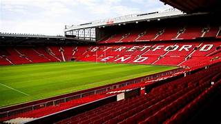

The Theatre of Dreams

Welcome to the official Manchester United fan site. This website highlights the team roster, club history, and official merchandise store. Manchester United is one of the most iconic football clubs in the world.
Explore the current squad, learn about the club’s legendary history, and shop official Manchester United merchandise.